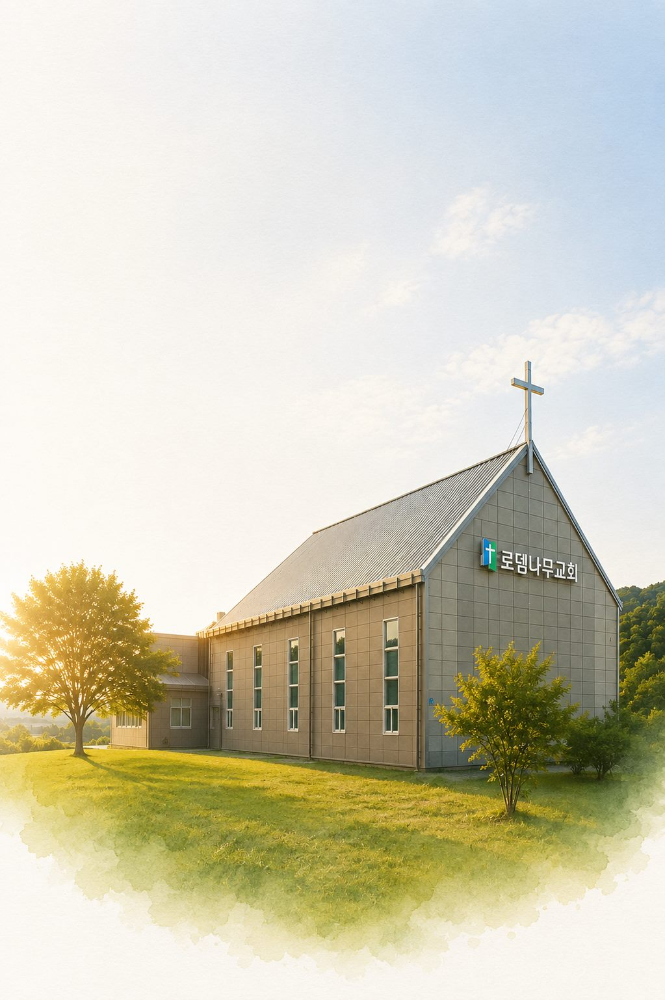

말씀 중심의 교회
성경의 절대적 권위를 인정하고, 성경만이 유일한 선이요 의임을 고백합니다. 성경이 삶의 원칙이 되고, 가르침이 삶 속에서 실천되며, 신앙의 중심이 되도록 가르칩니다.

부르심을 입은 자들이 양육을 통해 다 제자가 되게 하고,
제자 된 자들이 반드시 사도가 되어 복음을 전하는 교회를 세워갑니다.
성경의 절대적 권위를 인정하고, 성경만이 유일한 선이요 의임을 고백합니다. 성경이 삶의 원칙이 되고, 가르침이 삶 속에서 실천되며, 신앙의 중심이 되도록 가르칩니다.
예배를 통해 회개하고 하나님을 만나 상한 영혼이 회복되며, 강한 일꾼이 되어 담대하게 세상으로 나아가는 것을 목표로 삼습니다.
모이는 교회이자 흩어지는 교회. “가든지 보내든지”(요 20:21)의 말씀을 따라 캄보디아와 국내 미자립 교회를 함께 섬깁니다.
주일예배와 수요예배, 성가대 찬양과 선교 현장까지. 유튜브 채널에서 만나 보실 수 있습니다.
접붙이기에서 그루터기까지, 신앙의 성장 단계마다 함께 걷습니다.
새가족반
교회에 처음 오신 분이 그리스도께 접붙여지도록 돕는 첫 걸음입니다.
양육반
말씀 위에 신앙의 뿌리를 깊이 내리는 기초 양육 과정입니다.
성장반
공동체를 든든히 받치는 신앙의 기둥으로 자라가는 과정입니다.
사역자반
받은 은혜가 섬김의 열매로 나타나도록 사역을 준비합니다.
제자반
다시 누군가의 시작이 되어 주는 제자의 자리로 나아갑니다.
2005년 동탄에서 시작해 2014년 향남으로, 2021년 다음세대를 위한 자리로. 로뎀나무교회는 언제나 사람이 있는 곳으로 옮겨 왔습니다.
이제 향남 3지구 도시개발과 함께 교회는 다시 한 번 새로운 터에 세워집니다. 신안산선 연장과 서해선 KTX로 향남이 크게 달라지는 이때, 새로 이사 오는 이웃들을 가장 먼저 맞이하는 “동네의 첫 번째 교회”가 되기를 기도합니다.